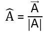
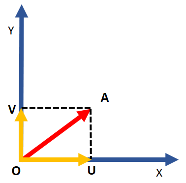
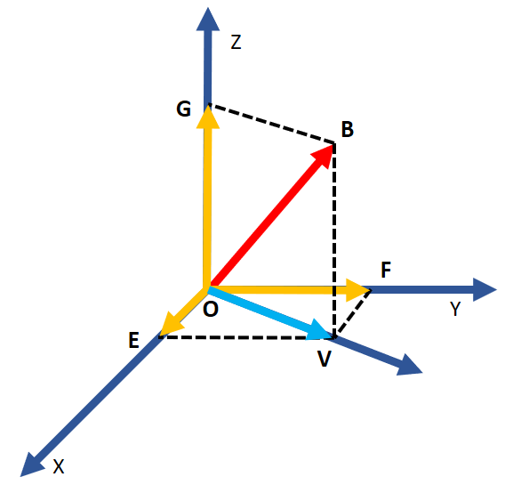
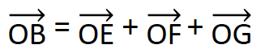
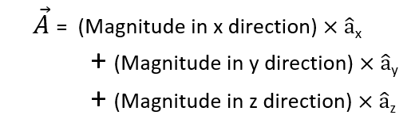
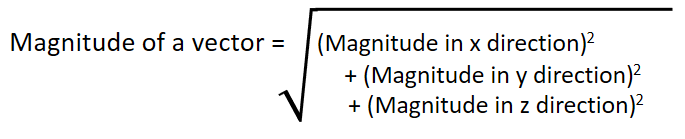

HOME BLOG EBOOKS ABOUT CONTACT SHOP
Along a particular direction, there can be infinite no. of possible vectors, with all of them just differing in magnitudes from one another. But in any direction, there can only be a single vector of unit magnitude, such a vector is called the Unit vector. The significance of the Unit vector is that all vectors in a specific direction are scaled versions of the unit vector in that direction.
A unit vector in the direction of a vector , denoted by
can be obtained as,

One big advantage of using vectors is that they can be resolved into any no. of components. In the simplest case, a vector can be resolved into 2 component vectors lying in the same plane.
Shown below is a vector , if we draw its projections onto any 2 perpendicular axes in its plane (for convenience we have picked the x and y axes), we get a set of 2 new vectors(
and
) . These 2 new vectors are called the components of vector
.

We can take this one step further and resolve a vector into 3 components in 3 dimension. What’s the advantage of doing this? For one, resolving vectors into perpendicular components allows us to express them in terms of the Cartesian coordinates, which we are familiar with.
Consider a vector as shown in the figure below. If we resolve this vector into 2 perpendicular vectors, we get 2 component vectors
and
. Vector
is along the z- axis, so we’ll leave it as such. But vector
on the other hand lies in the x-y plane, so we can consider it as a separate vector and resolve it further (into components
and
). This way we can resolve a vector
into 3 mutually perpendicular vectors
,
and
, which lies along the x, y and z axes respectively.


Any vector can be resolved into components along the coordinate axes in the same manner. By doing this, we have managed to generalize vectors a little bit. What if we somehow inculcate the idea of unit vectors into this whole thing, Can we generalize vectors even further?
The idea is that the unit vector is the most basic vector along a direction and every other vector along that same direction is just a scaled version of that unit vector. So if we denote the unit vectors along x, y and z axes as ,
and
respectively, then any vector
can be expressed as:

Math books usually denote the unit vectors along the 3 axes as ,
and
, but since these notations have other meanings in engineering, the usual practice is to go for
,
and
.
As a consequence of this generalization, we can denote a vector simply by using 3 no’s. For example, (5, 2, -4) denotes the vector 5+ 2
- 4
. Similarly, (0, 1, 2) denotes the vector
+ 2
. In the later example the x component is absent, meaning the vector lies in the y-z plane.
The magnitude of a vector can be obtained from its components as:

This result can be easily obtained by using the Pythagoras theorem.